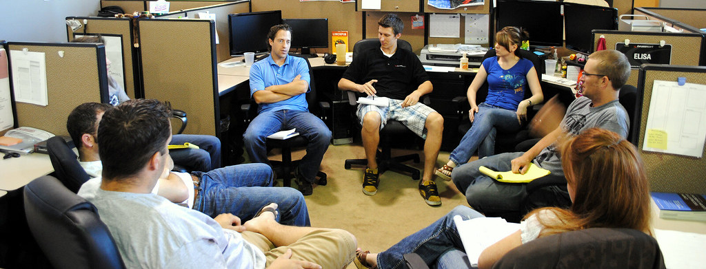
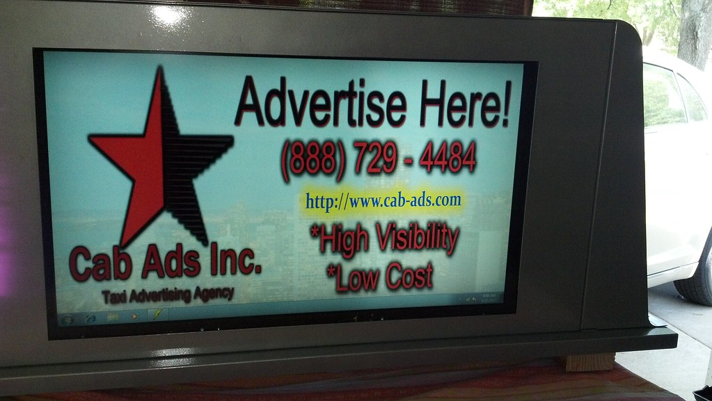
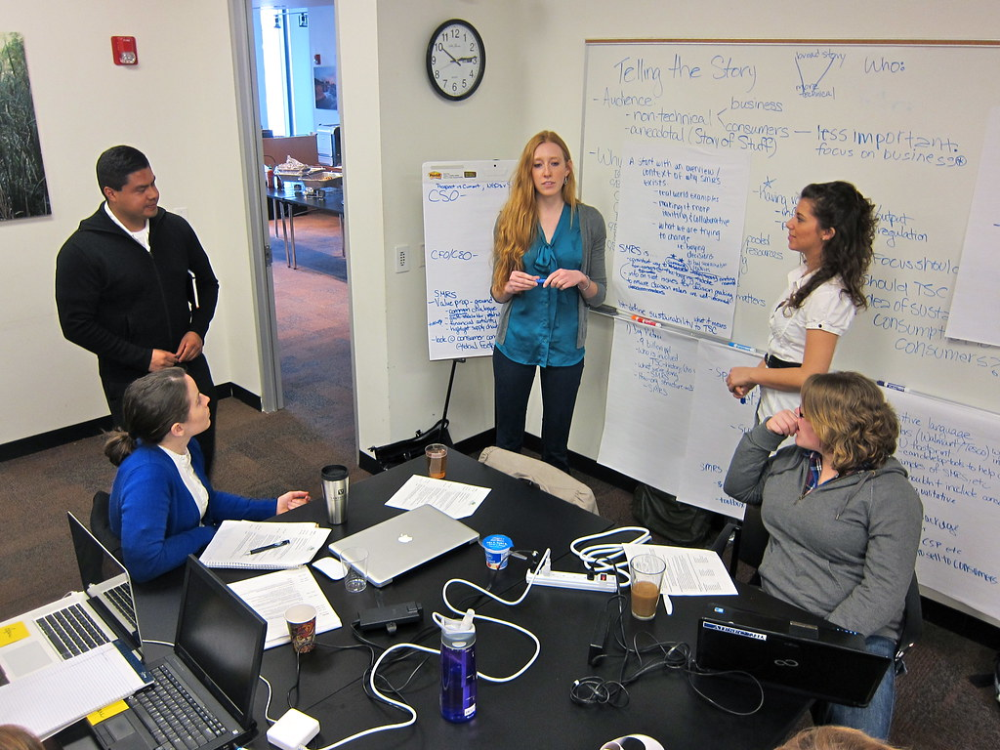

What Is the Difference Between SEO and SEM, and Which One Should You Choose?
Learn the real difference between SEO and SEM, how cost and timing shape the choice, and how small firms pick the mix that wins clicks without waste.
SEO lifts a site in unpaid search results. SEM buys visits through paid search ads. This guide answers what is the difference between SEO and SEM and shows how you pick the mix that fits your budget.
Most small firms pour their whole budget into paid ads and skip the slow work of SEO. They buy clicks for a month and stop when the cash runs out. This habit leaves them with no visits the day the ads stop.
You will learn how each path works, how cost and timing shape the choice, and how to blend both so your site wins clicks now and keeps winning them later.

How SEO Earns Clicks Without Paying For Each Visit
SEO builds pages that match the words buyers type into Google. You fix page speed, you write clear guides, and you earn links from sites that trust your work. Google reads these signals and lifts your pages above rivals that skip this work.
SEO pays off over time because a page that ranks keeps earning clicks month after month. You write the guide once and it serves searchers for years with small updates. This lasting pull explains why firms that invest in SEO spend less per visit as their pages age.
Ayesha runs a small bakery in Lahore and she wrote a guide about wedding cakes with clear photos and prices. Google now shows her guide when nearby buyers search for wedding cakes. Her orders grew because the guide ranks day and night without an ad budget behind it.
How SEM Buys Visits Through Paid Search Ads
SEM places your ad above unpaid results the moment you launch a campaign. You pick the search words, you set a bid for each click, and you write ad copy that invites the click. Google shows your ad when the search matches your words and your bid wins the slot.
Paid ads suit a launch because they bring visits on day one while SEO still grows. A firm that knows what is the difference between SEO and SEM uses ads for speed and SEO for staying power. You test offers with ads and you keep the winners for your SEO pages.
Bilal owns a tyre shop in Saddar and he ran a paid ad for emergency tyre repair during a holiday rush. His ad showed above unpaid results and his phone rang through the weekend. His sales jumped because the ad reached buyers at the exact moment they needed help.

How Cost And Timing Shape The Choice Between SEO And SEM
SEO costs time and effort up front and it pays back slowly through free clicks. SEM costs cash for each click and it stops the moment you pause the budget. A firm that weighs the SEO vs SEM cost and timeline gains more from SEO pages that keep working after the work ends.
Timing also shapes the choice because a new product needs visits now and a lasting guide needs months to rank. You run ads when a sale ends this week and you build SEO when a guide must rank all year. This split keeps cash working now while your pages grow for later.
Sara runs a home bakery in DHA and she used ads for a weekend cake sale while her guides ranked slowly. Her ads brought buyers for the sale and her guides kept bringing orders after the sale ended. Her mix worked because ads covered the short rush and SEO covered the long calm after it.
When To Use SEO And When To Use SEM
You pick SEO when the search brings buyers month after month and the guide can rank for years. You pick SEM when the offer ends soon or the search brings buyers for one short season. This rule answers what is the difference between SEO and SEM in practice because each path fits a distinct kind of search.
You also weigh who searches and how fast they buy before you choose a path. A buyer who compares options for weeks suits SEO guides that teach and build trust. A buyer who needs help tonight suits a paid ad that shows at the top at once.
Ahmed owns a small gym in Faisalabad and he wrote guides about gym training while he ran ads for a new year offer. His guides brought new members through the year and his ads filled the short offer seats fast. His plan worked because each path served the buyers it fits best.
How To Blend SEO And SEM Into One Plan
You use SEO and SEM together by letting ads test words while SEO pages grow around the winners. You run a short ad test, you watch which words bring buyers, and you build guides for the words that convert best. This loop turns ad spend into lasting pages that earn free clicks.
You also share one budget across both paths and you shift cash as results arrive. You feed the winning ad words into new guides and you pause ads for words your guides already rank for SEO vs PPC for small business. This shift saves cash because your pages take over the searches that ads once bought.
Maryam runs a Karachi craft shop and she tested new dye colours with ads before she wrote guides about them. Her ads showed which colours buyers loved and her guides ranked for those colours within months. Her shop grew because each ad test shaped the next guide she wrote.

Frequently Asked Questions
Can a small business use SEO and SEM together on a tight budget?
A small business can blend both paths by spending a small sum on ads for one short test while it builds free guides over time. You cap the ad budget each day and you pause ads that bring no buyers. You keep the guides that rank and you reuse the winning ad words in new pages.
How long does SEO take to show results?
Most sites see early movement after a few months of steady work on guides, speed, and links. Google needs time to test new pages with real searchers and trust their value. You speed up the wait by fixing technical faults first and writing guides that answer one search in full.
Do paid ads stop working the moment I pause them?
Paid ads stop showing the moment you pause the campaign because Google shows ads only while you pay for clicks. Your unpaid pages keep ranking after you pause ads, and that gap shows why firms build SEO beside ads. You plan for the gap by growing guides before you cut ad spend.
Which path suits a new website with no traffic?
A new website gains faster visits from ads because SEO needs months to build trust with Google. You run small ad tests to learn which words bring buyers while you publish guides that rank over time. You shift budget toward SEO as your guides climb and your ad costs fall. This test shows you when to use SEO vs SEM for each kind of search.
Does SEM help SEO rankings directly?
Paid ads do not lift unpaid rankings directly because Google keeps paid and unpaid results apart. Ads still help SEO in a roundabout way because they bring visitors who link and share your guides. You treat ads as a fast test bed and SEO as the lasting asset they feed.
What budget should a beginner set for first SEM ads?
A beginner starts with a small daily cap that the firm can afford to lose while it learns. You test one offer and a few search words, and you watch which clicks turn into buyers before you raise the cap. You stop any ad that spends without bringing buyers and you move that cash to the words that convert.
Can SEO replace paid ads completely?
SEO can cover many searches over time, yet paid ads still serve short sales, new launches, and searches where rivals buy the top slots. A firm that drops ads too soon may lose buyers who search during a sale. You keep a small ad budget for those moments even after your guides rank well.
How do I know whether SEO or SEM brings me more buyers?
You track each path in one sheet with visits, calls, and sales beside the cost of each path. You compare which path brings buyers at a lower cost per sale over a full month. You then move more budget to the path that wins and you keep testing the other path with a small share.
You now know how SEO earns free clicks over time and how SEM buys visits at once. You learned what is the difference between SEO and SEM, how cost and timing shape the choice, and how a blend of both wins clicks now and later. Start with one guide and one small ad test, and grow the mix that brings you buyers.
Start your free SEO and SEM audit with RankHarbor today.
How to Choose Between SEO and PPC for a Small Business Budget
Related articles
- What Are Dofollow and Nofollow Links in SEO and When Do You Use Each?
- How SaaS Companies Use User Reviews to Win Search Traffic and Signups
- What Is Crawl Budget in SEO and How Do You Optimize It?